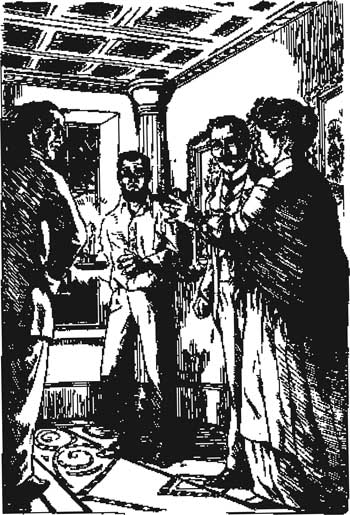
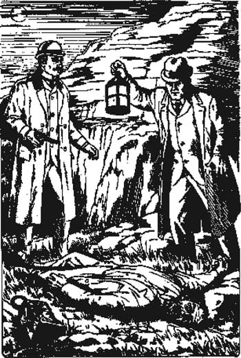

Listen to Part 1:
9

Ánh đèn trên đầm lầy
Baskerville Hall
Dartmoor
15 tháng 10 năm 1889
Holmes thân mến,
Tôi hiện đã có câu trả lời cho câu hỏi mà tôi để ngỏ vào cuối bức thư trước. Tôi đã biết lý do tại sao Barrymore ra hiệu bằng nến.
Trước tiên, tôi sẽ kể với ngài về Sir Henry và cô Stapleton. Tôi đã nói với ngài là họ rất thân thiết. Tôi phát hiện ra rằng Sir Henry đang yêu cô ấy. Thực tế là anh ấy muốn lấy cô ấy làm vợ.
Sáng hôm qua, anh ấy nói với tôi, "Tôi sẽ đi gặp cô Stapleton. Tôi muốn đi một mình."
"Nhưng thưa ngài Holmes, ngài đã bảo tôi ở cùng ngài," tôi nói. "Ngài không được phép đi qua đầm lầy một mình."
Listen to Part 2:
"Tôi sẽ đi một mình," Sir Henry nói, và anh ấy bỏ đi.
Tôi không biết phải làm gì. Tôi đợi mười phút, sau đó tôi quyết định đi theo anh ấy. Tôi không nhìn thấy mọi thứ, nhưng đây là những gì đã xảy ra.
Sir Henry gặp cô Stapleton trên đầm lầy. Anh ấy cầu hôn cô ấy, anh ấy đã kể lại với tôi như vậy. Họ đi về hướng Merripit để gặp ngài Stapleton. Họ gặp ngài ấy bên ngoài ngôi nhà. Sir Henry kể tin tức đó cho ngài Stapleton.
Tôi đến High Tor trước khi Sir Henry gặp ngài Stapleton, vì vậy tôi đã nhìn thấy những gì diễn ra tiếp theo. Tôi thấy Sir Henry nói chuyện với ngài Stapleton. Đột nhiên, ngài Stapleton trở nên điên cuồng và tức giận. Ông ấy hét vào mặt Sir Henry. Sau đó, ông ấy nắm tay em gái mình và kéo cô ấy về phía Merripit.
Sir Henry quay lưng đi và bước về hướng dinh thự. Anh ấy nhìn thấy tôi ở High Tor. Anh ấy không giận vì tôi đã theo dõi anh ấy.
"Watson," anh ấy nói, "người đàn ông đó bị điên. Tôi đã nói với ông ấy rằng tôi muốn cưới em gái ông ấy. Ông ấy hét vào mặt tôi. Ông ấy bảo tôi đừng bao giờ gặp lại cô ấy nữa. Tôi nghĩ là ông ấy bị điên."
Tôi không nói gì và chúng tôi đi bộ trở về dinh thự. Chiều hôm đó, ngài Stapleton đến dinh thự. Ông ấy muốn nói chuyện với Sir Henry. Ông ấy cứ nói, "Tôi xin lỗi. Tôi đã rất thô lỗ." Sau đó, ông ấy mời Sir Henry đến ăn tối tại Merripit vào tối thứ sáu.
Bây giờ tôi sẽ kể cho ngài nghe câu chuyện về Barrymore. Tôi bảo Sir Henry rằng tôi đã nhìn thấy Barrymore ra hiệu bằng nến. Sir Henry nói, "Chúng ta sẽ chờ ông ấy tối nay. Nếu ông ấy ra hiệu một lần nữa, chúng ta sẽ bắt ông ấy."
Sir Henry và tôi đã không đi ngủ. Chúng tôi ngồi đợi trong phòng làm việc của Sir Henry cho đến hai giờ sáng. Sau đó, chúng tôi nghe thấy tiếng bước chân bên ngoài phòng làm việc. Chúng tôi lắng nghe. Tiếng bước chân đi lên cầu thang.
Sir Henry và tôi đợi thêm hai phút nữa. Sau đó, chúng tôi mở cửa một cách nhẹ nhàng và đi lên cầu thang. Chúng tôi thấy Barrymore ở gần cửa sổ lớn cuối hành lang. Ông ấy cầm một ngọn nến trên tay và đang vẫy ngọn nến trước cửa sổ.
Listen to Part 3:
"Ông đang làm gì vậy, Barrymore?" Sir Henry hét lên.
Barrymore gần như đánh rơi ngọn nến. Ông ấy trông rất sợ hãi. "Không có gì đâu thưa ngài Henry," ông ấy nói. "Tôi đang kiểm tra cửa sổ, thế thôi."
"Ông đang ra hiệu với ai đó trên đầm lầy," Sir Henry nói. "Ai đang ở bên ngoài? Nói cho tôi biết!"
"Không có ai cả, thưa ngài," Barrymore nói.
"Nói cho tôi biết," Sir Henry nói, "nếu không ông sẽ phải rời khỏi ngôi nhà này vào ngày mai. Nói cho tôi biết ngay!"
"Thưa ngài Henry," một giọng nói khác cất lên, "xin ngài đừng tức giận với chồng tôi. Tại tôi cả."
Chúng tôi quay lại và thấy bà Barrymore. Bà ấy đang đứng trên đầu cầu thang, nắm chặt hai tay.
"Anh trai tôi đang ở bên ngoài, thưa ngài," bà ấy nói. "Anh trai tôi là Selden, người đã trốn thoát khỏi nhà tù."
"Selden, tên sát nhân sao?" Tôi nói. "Và tại sao bà lại ra hiệu với ông ấy vào ban đêm?"
"Chồng tôi mang thức ăn và quần áo cho ông ấy," bà Barrymore nói. "Chúng tôi ra hiệu để báo cho ông ấy biết chồng tôi sắp tới."
Listen to Part 4:
"Tôi hiểu rồi," Sir Henry nói. "Ông ấy là anh trai của bà; bà phải cố gắng giúp ông ấy. Quay về phòng đi. Chúng ta sẽ nói về chuyện này vào buổi sáng."
Vợ chồng nhà Barrymore rời khỏi phòng.
Sir Henry quay lại và nói với tôi. "Tôi rất thương họ, nhưng Selden là một kẻ giết người. Tôi phải cố gắng bắt ông ta."
"Nhìn kìa!" Tôi nói. "Nhìn ra ngoài cửa sổ. Có một ngọn đèn trên đầm lầy."
Sir Henry nhìn ra. Một ngọn đèn nhỏ đang tỏa sáng trên đầm lầy. Nó ở gần High Tor.
"Đó là ông ta!" Sir Henry nói. "Đi thôi, Tiến sĩ Watson, chúng ta sẽ đến chỗ ngọn đèn đó. Mang theo khẩu súng lục của ông nhé."
Chúng tôi nhanh chóng mặc áo vào và đi ra khỏi đầm lầy. Trăng sáng, vì vậy chúng tôi có thể nhìn thấy con đường băng qua đầm lầy. Ngoài ra, chúng tôi cũng có thể nhìn thấy ngọn đèn tín hiệu. Nó cách chúng tôi khoảng một dặm.
"Đó!" Sir Henry nói. "Selden ở đó. Nhanh lên!"
Tôi đi theo Sir Henry dọc theo con đường băng qua đầm lầy. Tôi khá lo lắng. Tôi không muốn Sir Henry đi quá xa vào đầm lầy vào ban đêm.

Listen to Part 5:
"Thưa ngài Henry," bà Barrymore nói, "xin ngài đừng tức giận
với chồng tôi. Tại tôi cả."
Lúc đó, chúng tôi nghe thấy một âm thanh kỳ lạ. Đó là một âm thanh hú sâu. Nó đến từ khá xa.
"Đó là cái gì?" Sir Henry hỏi. Có nỗi sợ hãi trong giọng nói của anh ấy.
Tôi cũng sợ. "Nghe như tiếng chó," tôi nói. "Nghe như một con chó rất to. Chúng ta quay trở lại đi chứ?"
"Không," Sir Henry nói. "Chúng ta gần tới rồi. Nhìn kìa!"
Ở phía trước, chúng tôi nhìn thấy rõ ngọn đèn tín hiệu. Nó phát ra từ một chiếc đèn đặt trên một tảng đá. Bên cạnh tảng đá là một người đàn ông, nhưng người đàn ông đó không nhìn thấy chúng tôi. Ông ấy đang nhìn theo hướng khác.
Một lần nữa, chúng tôi lại nghe thấy tiếng hú sâu, tiếng của một con chó rất to. Lần này, âm thanh lại gần hơn. Chúng tôi nghe thấy tiếng hú thêm một lần nữa. Nó đang tiến lại gần! Người đàn ông bên tảng đá cũng nghe thấy tiếng hú. Ông ấy nhặt chiếc đèn lồng lên và nhảy lên tảng đá. Ông ấy nhìn một hướng, rồi lại nhìn hướng khác. Đột nhiên, ông ấy nhảy khỏi tảng đá và bắt đầu chạy.
Ông ấy chạy về phía High Tor. Ông ấy đang chạy trốn khỏi chúng tôi. Nhưng ông ấy không chạy trốn vì nhìn thấy chúng tôi. Ông ấy đang chạy trốn khỏi một điều gì đó mà chúng tôi không thể nhìn thấy.
"Nhanh lên, Tiến sĩ Watson, đuổi theo ông ta!" Sir Henry hét lên. "Chuẩn bị súng lục đi."
Chúng tôi chạy dọc theo con đường hẹp. Gần đó, chúng tôi nghe thấy tiếng hú sâu. Nó rất gần và rất to. Sau đó, chúng tôi nghe thấy tiếng hét. Chúng tôi dừng lại.
Listen to Part 6:
"Cẩn thận, Tiến sĩ Watson," Sir Henry nói. "Chúng ta hãy tiến lên từ từ."
Đêm tối im lặng. Chúng tôi bước tới từ từ. Có thứ gì đó, hoặc một ai đó, đang nằm gần chân đồi Tor. Chúng tôi đi đến đó. Tôi cầm súng lục của mình ở trước mặt.
Chúng tôi phát hiện thấy xác của một người đàn ông dưới chân đồi Tor. Người đàn ông đã ngã từ trên ngọn đồi đá xuống. Ông ấy đã chết. Cổ ông ấy bị gãy.

Chúng tôi phát hiện ra xác của một người đàn ông dưới chân đồi Tor.
Chúng tôi chắc chắn rằng người đàn ông đó là Selden. Ông ấy mặc quần áo cũ của Sir Henry, những bộ quần áo mà Sir Henry đã đưa cho Barrymore.
Tôi có một điều kỳ lạ cuối cùng muốn kể cho ngài nghe, Holmes.
Tôi ngước lên ngọn đồi Tor mà Selden đã ngã xuống. Trên cao, ở đỉnh đồi Tor, có một người đàn ông cao, gầy đang đứng. Tôi chỉ nhìn thấy ông ấy trong một khoảnh khắc. Sau đó, ông ấy biến mất trong màn đêm. Nhưng tôi biết mình đã từng nhìn thấy ông ấy. Tôi sẽ tìm người đàn ông kỳ lạ này, người đi lại trên đầm lầy vào ban đêm.
Mục lục
- Trang tiêu đề
- Mục lục
- Ghi chú về câu chuyện này
- Nhân vật trong câu chuyện
- 1 Ông Sherlock Holmes
- 2 Lời nguyền của dòng họ Baskerville
- 3 Vấn đề
- 4 Ngài Henry Baskerville
- 5 Đôi ủng bị mất
- 6 Lâu đài Baskerville
- 7 Gia tộc Stapleton ở Merripit House
- 8 Báo cáo đầu tiên của Tiến sĩ Watson
- 9 Ánh sáng trên cánh đồng hoang
- 10 Người đàn ông trên cánh đồng hoang
- 11 Nông trại High Tor
- 12 Đặt bẫy
- 13 Chú chó của dòng họ Baskerville
- 14 Trở về phố Baker
- Các điểm để hiểu
- Danh sách các tiêu đề ở bậc Tiểu học
- Trang bản quyền